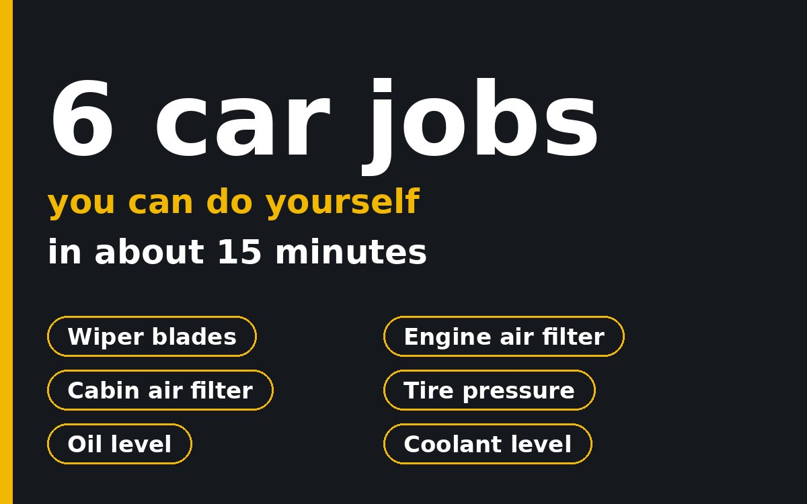

Home / Maintenance
6 Car Jobs You Can Do Yourself in About 15 Minutes
Quick answer
Six jobs most owners can do with basic tools in 5 to 20 minutes: replacing wiper blades, changing the engine and cabin air filters, and checking tire pressure, oil level and coolant level. Each one below links to a step-by-step guide. Times are typical for most cars, so check your own manual and take your time.

Before you start
These jobs are about as simple as car maintenance gets, but the basics still apply: park on level ground, switch the engine off, apply the parking brake and keep your car's manual handy. The times below are typical for most cars, so allow a little longer the first time.
| Job | Typical time | What you need |
|---|---|---|
| Wiper blades | 5 to 10 minutes | New blades in the right size |
| Engine air filter | 10 to 15 minutes | New filter, a screwdriver |
| Cabin air filter | 10 to 20 minutes | New filter, a flashlight |
| Tire pressure | About 10 minutes | A tire gauge |
| Oil level | 2 to 5 minutes | A clean cloth |
| Coolant level | About 5 minutes | A cold engine |
1. Wiper blades
Streaks, squeaks and smears mean the rubber is worn. Swapping blades takes a few minutes: lift the arm, release the clip, slide the old blade off and click the new one on. Check the size for each side first, because the driver's and passenger's blades are often different lengths. Guide the arm back down by hand, since a wiper arm that snaps onto the glass can crack the windshield. Full steps: Wiper Blades Streaking? Signs to Replace Them and How to Do It.
2. Engine air filter
The engine air filter sits in a black airbox and is usually held shut by clips or screws. Open the lid, lift out the old filter, wipe out the box and fit the new filter so it sits flat all the way round. A gap lets unfiltered air in, so don't force the lid. Full steps: Engine Air Filter: Dirty Symptoms and How to Change It.
3. Cabin air filter
If the airflow from the vents is weak or the car smells musty, check the cabin filter first. Its location depends on the car, often behind the glovebox or under the dashboard on the passenger side. Note which way the airflow arrow points before you pull the old filter out. Full steps: Cabin Air Filter: Signs You Need a New One and How to Swap It.
4. Tire pressure
Check the pressure about once a month, when the tires are cold. The correct figure is on the sticker in the driver's door frame or in the manual, not on the tire sidewall, which shows the maximum. Full steps: How to Check Tire Pressure Correctly (and Where to Find the Right PSI).
5. Engine oil level
Park on level ground, wait a few minutes after switching off, then pull the dipstick, wipe it, push it fully back in and read it. The level should sit between MIN and MAX. Add oil in small amounts and never overfill. Some newer cars have no dipstick and show the level in the menu. Full steps: How to Read an Oil Dipstick and Check Your Engine Oil Level.
6. Coolant level
Look at the translucent coolant tank when the engine is completely cold and check that the level is between MIN and MAX. Never open the cap on a hot engine, because the system is pressurized. Full steps: How to Check Coolant Level and Top It Up Safely.
When to leave it to a shop
Brakes, steering and suspension are a different level, because mistakes there affect safety. If you want to learn more about brakes, start with Brake Pads vs Rotors before you decide whether to do the work yourself.
FAQ
Do I need special tools for these jobs?
Usually just a screwdriver, a tire gauge and a clean cloth. Each guide lists what you need.
How often should I do these checks?
Check the tire pressure and the fluid levels about once a month. Replace the filters and wiper blades according to your service schedule or when they look worn.
Which job should I do first?
Tire pressure and the oil and coolant levels. They take the least time and affect safety and reliability the most.
Can I damage my car doing these jobs?
Mistakes usually come from forcing a part, overfilling a fluid or fitting a filter the wrong way. Follow the guides and your manual, and take your time.
This guide is general information, not professional advice. Check your own vehicle's manual for exact specs and read the disclaimer before starting any job.